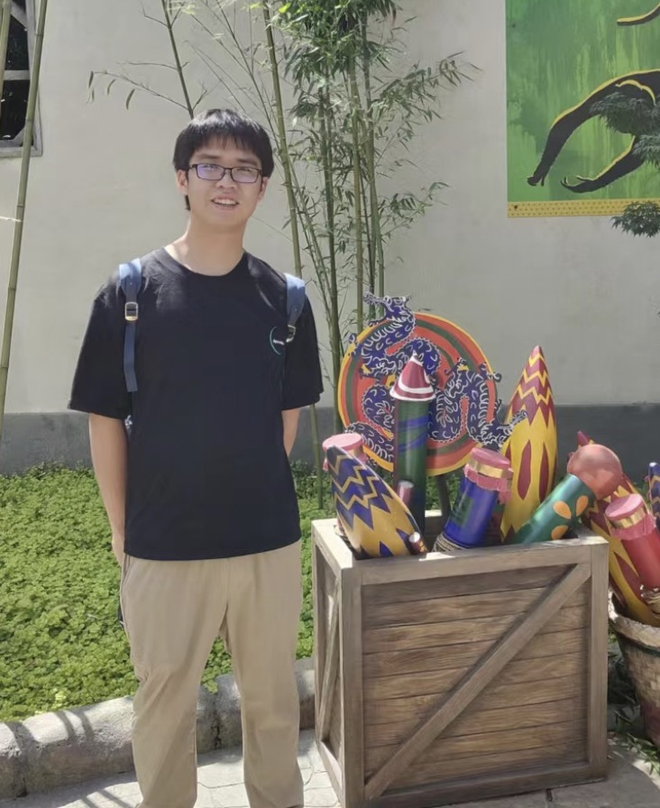
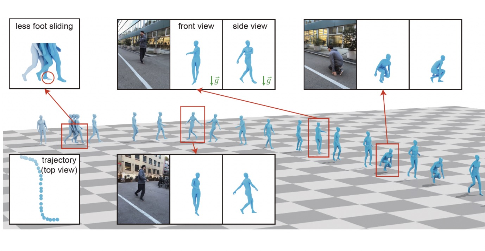
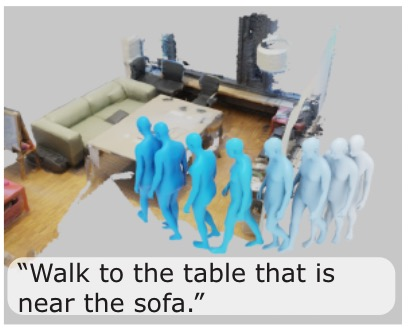
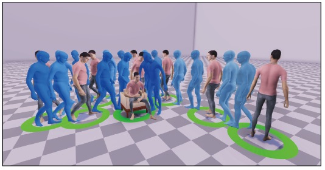
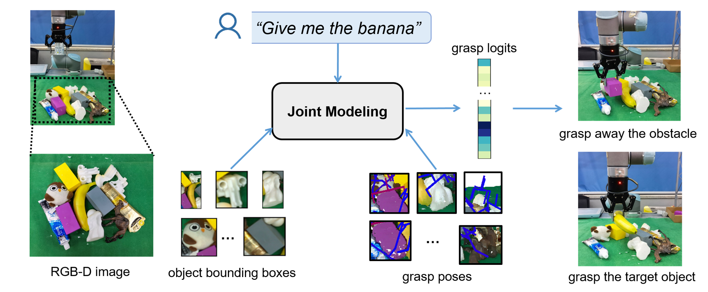
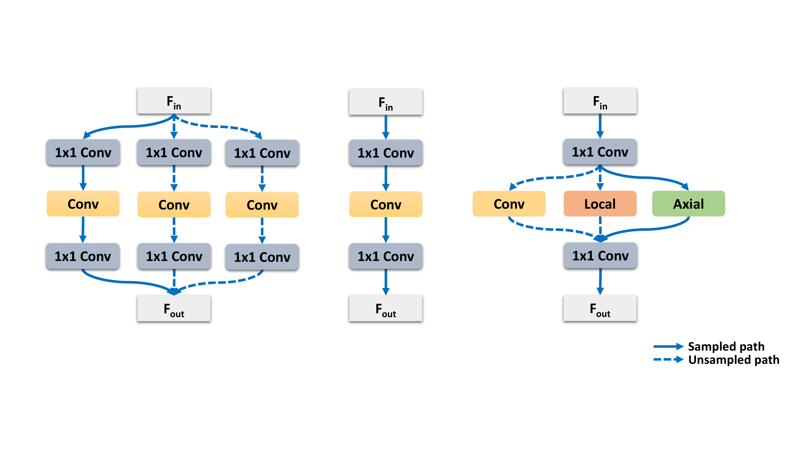
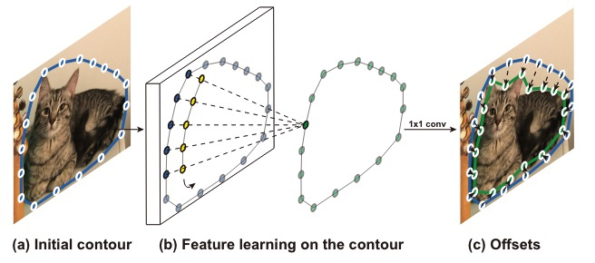

Huaijin Pi
I am an CS Ph.D. student at the University of Hong Kong, advised by
Prof. Taku Komura .
I got my M.Eng in Computer Science from Zhejiang University in 2024, where I was advised by
Prof. Xiaowei Zhou at the State Key Laboratory of CAD&CG.
I obtained my B.Eng in Control Science and Engineering with an honor degree at Chu Kochen Honor
College in 2021.
Email /
Scholar /
Github

Recent News
[2024.07] One paper got accepted by Siggraph Asia 2024!
Publications
* indicates equal contributions.
Your browser does not support the video tag.

World-Grounded Human Motion Recovery via Gravity-View Coordinates
Zehong Shen* ,
Huaijin Pi* ,
Yan Xia ,
Zhi Cen,
Sida Peng ,
Zechen Hu,
Hujun Bao,
Ruizhen Hu ,
Xiaowei Zhou
Siggraph Asia , 2024
project page
/
arXiv
Your browser does not support the video tag.

Generating Human Motion in 3D Scenes
from Text Descriptions
Huaijin Pi ,
Sida Peng ,
Zehong Shen ,
Minghui Yang,
Shuai Zhu,
Hujun Bao,
Xiaowei Zhou
CVPR , 2024
project page
/
arXiv
Your browser does not support the video tag.

Hierarchical Generation of Human-Object Interactions with Diffusion
Probabilistic Models
Huaijin Pi ,
Sida Peng ,
Minghui Yang,
Xiaowei Zhou ,
Hujun Bao
ICCV , 2023
project page
/
arXiv

A Joint Modeling of Vision-Language-Action for Target-oriented Grasping in
Clutter
Kechun Xu ,
Shuqi Zhao,
Zhongxiang Zhou,
Zizhang Li ,
Huaijin Pi ,
Yifeng Zhu ,
Yue Wang ,
Rong Xiong
ICRA , 2023
arxiv
E-NeRV: Expedite Neural Video Representation with Disentangled
Spatial-Temporal Context
Zizhang Li ,
Mengmeng Wang ,
Huaijin Pi ,
Kechun Xu ,
Jianbiao Mei,
Yong Liu
ECCV , 2022
arxiv

Searching for TrioNet: Combining Convolution with Local and Global
Self-Attention
Huaijin Pi ,
Huiyu Wang ,
Yingwei Li ,
Zizhang Li ,
Alan Yuille
BMVC , 2021
arxiv

Deep Snake for Real-Time Instance Segmentation
Sida Peng ,
Wen Jiang ,
Huaijin Pi ,
Xiuli Li,
Hujun Bao,
Xiaowei Zhou
CVPR , 2020 (Oral Presentation) arxiv
Services
Reviewer of IJCV , CVPR .

{kind=link}